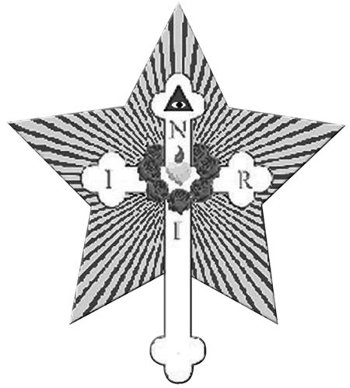

Modern Elbise İçindeki Antik Gerçekler
1659) Kamuoyunda Gülhaç Tarikatı hakkında bir şeyler öğrenmek için yaygın bir talep bulunduğundan ve Gülhaç Biraderlerinin Batı uygarlığında sahip olduğu önemli yer, kendi öğrencilerimiz arasında bile çok az anlaşıldığından konu hakkında doğru bilgi vermek iyi olacaktır.
1660) Dünya’daki her şey yasalara tâbidir. Bizim evrimimiz bile yasalara göre yönlendirilmektedir. Ruhsal ve fizik gelişim el ele giderler. Güneş, fizik ışık kaynağıdır ve bildiğimiz gibi doğudan batıya doğru gidiyor görünerek Yer’in bir kısmından diğerine ışık ve yaşam getirir. Fakat nasıl insanın görünür bedeni, onun çok parçalı yapısının yalnızca bir parçası ise görünür güneş de güneşin yalnızca bir parçasıdır. Işınları, birbiri ardına Yer’in kısımları üzerindeki ruhun büyümesini sağlayan görünmez ve ruhsal bir güneş vardır. Bu ruhsal tepi (impulse) fizik güneş ile aynı yönde, doğudan batıya doğru gider.
1661) İsa’dan altı ya da yedi yüzyıl önce Pasifik Okyanusunun batı kıyısı yakınlarında yeni bir ruhsallık dalgası harekete geçirildi. Onun amacı Çin halkına aydınlanmayı getirmekti. Konfüçyüs’ün dinini göksel krallıkta günümüze dek milyonlarca kişi benimsedi. Daha sonra bu dalganın etkisini Buda’nın dininde gördük. Bu din, milyonlarca Hindu’nun ve batılı Çinlinin ruhsal çabalarını uyandırmaya yönelik bir öğretiydi. Batıya doğru olan yolunda daha entelektüel olan Yunanlılar arasında Pisagor ve Plato’nun yüksek felsefesinde göründü. Ve en sonunda insan ırkının öncüleri arasında Hristiyan dininin yüce formunu aldığı Batı Dünyası’na yayıldı.
1662) Hristiyan dini Batı’ya doğru ruhsal çabaların toplandığı ve yoğunlaştırıldığı Pasifik Okyanusu’nun kıyılarına kadar yayıldı. Orada bunlar, okyanus üzerinde yeni bir sıçrama yapmadan önce Doğu’da, Dünya’nın herhangi bir yerinde varolandan daha yüksek ve daha azametli ruhsal bir uyanışı başlatmak için bir zirve noktasına ulaşacaklar.
1663) Gündüz ve gece, Yaz ve Kış, Med ve Cezir, nasıl değişen çevrimler yasasına göre birbirlerini hiç kesintisiz takip ediyorlarsa, aynı şekilde bir ruhsal uyanış dalgasının Dünya’nın herhangi bir bölgesindeki görünmesini de, gelişimimizin tek taraflı olmaması için bir maddi tepkiler evresi takip eder.
1664) Din, Sanat ve Bilim, insan eğitiminin en önemli üç aracıdırlar. Ve onlar, araştırdığımız herhangi bir konuda bakış açımızı kaybetmezsek birbirlerinden ayrılamayacak bir şekilde birlik içinde üçlüdürler. Gerçek din, hem sanatı ve hem de bilimi kapsar, zira o, doğa yasaları ile uyum içinde güzel bir yaşamı öğretir.
1665) Gerçek bilim, en yüksek anlamda sanatsal ve dinseldir. Zira o bize, bizim mutluluğumuzu yöneten yasalara saygı duymamızı ve onlara uymamızı öğretir. Ve de dinsel bir yaşamın neden sağlık ve güzellik getirdiğini açıklar.
1666) Gerçek sanat, bilim kadar eğiticidir ve etki olarak din kadar yükselticidir. Mimarlıkta, evrendeki kozmik güç çizgilerinin en yüksek sunumunu buluruz. O, ruhsal bakan kimseyi Tanrısallığın büyüklük ve görkeminin huşu uyandıran anlayışından kaynaklanan güçlü bir sadakat ve tapınma duygusu ile doldurur. Heykeltıraşlık ve ressamlık, müzik ve edebiyat bizi, tüm bu güzel Dünya’nın değişmez kaynağı ve hedefi olan Tanrı’nın güzelliğinin üstün bir sezgisiyle doldurur.
1667) Ancak böyle her şeyi kapsayan bir öğreti insanlığın gereksinimlerine sürekli olarak cevap verebilir. Yunanlılarınki kadar geç bir çağda bile Gizem Tapınaklarında Din, Sanat ve Bilim birleşik olarak öğretiliyordu. Fakat sonradan her birinin daha iyi gelişmesi için belli bir süreliğine ayrılmaları zorunlu oldu.
1668) Sözde “karanlık çağlar” boyunca tek egemen Din’di. Bu zaman boyunca o, Bilim ve Sanat’ın ellerini ve ayaklarını bağladı. Sonra Rönesans dönemi geldi ve tüm dallarıyla Sanat, başa geçti. Ancak Din hâlâ çok güçlüydü ve Sanat, Din’in hizmetinde çok fazla kötüye kullanıldı. Son olarak da modern Bilim dalgası geldi ve Din’i demir elle hükmü altına aldı.
1669) Dinin Bilimi zincirlemesi Dünya’yı geriletmişti. Cehalet ve Hurafe, tarifsiz acıya neden oldu. Yine de insan, yüce bir ruhsal ideale değer verdi ve daha yüksek ve daha iyi bir yaşamı umut etti. Ancak Bilim’in Din üzerindeki yıkıcı etkisi çok daha korkunç oldu. Zira Tanrıların Pandora’nın kutusunda bıraktıkları tek ihsan olan umut bile Materyalizm ve Agnostisizm karşısında yok olabilir.
1670) Böyle bir durum devam edemez. Tepki ortaya çıkmalıdır. Eğer bu olmazsa anarşi, Evreni parçalayacaktır. Din, Bilim ve Sanat, bir felâketi önlemek için İyi’nin, Gerçeğin ve Güzelin birbirlerinden ayrılmadan önce edindiklerinden daha da yüksek bir ifadesinde tekrar birleşmelidir.
1671) Gelen olaylar gölgelerini gösteriyor. İnsanlığın Büyük Liderleri, Batı Dünyasında her tarafa yayılmış ultramateryalizm eğilimini gördüklerinde bu tehlikeli zamanda ona karşı koymak ve onu dönüştürmek için belli adımlar atacaklardır. Onlar, yeni tomurcuklanan Bilim Din’i nasıl öldürdüyse onu da öyle öldürmeyi dilemediler. Zira onlar, gelişmiş bir Bilimin tekrar Din ile aynı safta çalıştığında nihai İyi’nin ortaya çıkacağını gördüler.
1672) Ancak yağ suyla ne kadar karışabilirse ruhsal bir Din de materyalist bilimle o kadar karışabilir. Bu yüzden Bilimi ruhsallaştırmak ve Dini de bilimselleştirmek için çeşitli adımlar atıldı.
1673) Onüçüncü yüzyılda sembolik ismi Christian Rosenkreuz (Mesihçi Gül-Haç) olan yüksek bir ruhsal öğretmen bu işe başlamak için Avrupa’da göründü. O, okült ışığı yanlış anlaşılmış olan Hristiyanlık Dini üzerine tutmak ve Yaşamın ve Varlığın gizemini Din ile uyum içerisindeki bilimsel bir bakış açısından araştırmak gayesiyle gizemli Gülhaç Tarikatını kurdu.
1674) Onun Christian Rosenkreuz olarak doğumundan ve Gülhaçcı Gizem Okulu’nu kurmasından bu yana yüzlerce yıl geçti ve onun varlığı birçokları tarafından bile hâlâ bir efsane olarak görülüyor. Ancak onun Christian Rosenkreuz olarak doğumu Batı Dünyasının ruhsal yaşamında yeni bir çağın başlangıcını ifade ediyor. Bu özel Ego, o zamandan beri kesintisiz olarak fizik varlığıyla birinden diğerine Avrupa ülkelerinde bulunuyor. Eski araçları kullanılamaz hale gelince veya koşullar faaliyet gösterdiği bölgeyi değiştirmesini gerektirdiğinde kendisine yeni bir beden alıyor. Üstelik o, bugün de yüksek dereceden bir İnisiye olarak bedenlenmiş durumda ve Dünya bunu bilmese de Batı’nın bütün meselelerinde etkin bir faktördür.
1675) O, modern Bilimin uyanmasından yüzyıllar önce simyagerlerle çalıştı ve bir aracı vasıtasıyla Bacon’un günümüzde bozulmuş eserlerini ona ilham etti. Jacob Boehme ve diğerlerinin eserleri, onun aracılığıyla aldıkları ilham sayesinde ruhsal yönden bu kadar parlak hâle geldi. Ölümsüz Goethe’nin eserlerinde ve Wagner’in şaheserlerinde de aynı etkiyi buluruz. Kendisini ne ortodoks bilim veya ortodoks din tarafından zincirlere vurdurtmayan, kabuklarını kıran ve kötülük ve dalkavukluk yapmadan ruhsal çekirdeğe nüfuz eden tüm korkusuz ruhlar, Christian Rosenkreuz’da da bulunan yüce Rûh ile aynı kaynaktan kendi ilhamlarını aldılar.
1676) Onun ismi bile günümüz insanının Tanrısal Üstün insana dönüşme yöntemi ve aracının bir simgesidir. Bu sembol,
“Christian Rosen Kreuz”
Mesihçi Gül Haç
Bize insan evriminin amacını ve hedefini, yani gidilmesi gereken yolu ve kendisi aracılığıyla bu hedefin erişilebileceği yöntemi gösterir. Siyah haç, bitkinin yeşil içinde haçı çevreleyen kökü, dikenler, kan kırmızısı gül.. Tüm bunlarda Dünya’nın Gizeminin gizli çözümü yatmaktadır: İnsanın geçmişteki gelişimi, şimdiki bileşimi ve her şeyden önce gelecekteki gelişiminin sırrı.
1677) O, inançsızdan gizlidir, fakat İnisiye kişiye, kendisini mücevherlerin en nâdiri olan Filozof Taşı (Kohinor’dan daha değerli, hayır, Dünya’nın tüm hazinelerinden daha değerli) yapmak için gün be gün nasıl çalışması gerektiğini gösterecek kadar açıktır. O ona insanlığın cahilliğiyle elindeki bu paha biçilmez mücevheri oluşturmada kullanılabilecek malzemeyi devamlı boşa harcadığını hatırlatır.
1678) İnsanın yaşamın her zorluğunda sâbit ve sâdık kalması için Gülhaç, bir ilham olarak galip gelen kişinin muhteşem mükemmelliğine işaret eder. Ve de Umut Yıldızı olarak Mesih’i, İsa’nın bedenine girdiğinde bu olağanüstü taşı yapanın “ilk meyvelerini” gösterir.
1679) Araştırmalarla bulunmuştur ki, tüm dinsel sistemler, yalnızca o dinin din adamları için olan ve kitlelere verilmemiş bir öğretiyi içermektedir. Mesih de halka, bazı şeyleri doğrudan söylememiş ve benzetmelerle konuşmuştur. O Havarilerine bu benzetmelerin içsel anlamlarını, kendi gelişmiş ruhlarına uygun olarak derin bir anlayış onlarda uyandırmak için açıklamıştır.
1680) Paul bebeklere ya da cemaatin genç üyelerine “süt”, fakat daha derine inmiş olan güçlülere “et” verdi. Bu şekilde daima bir iç ve bir dış öğreti vardı. Bu içsel öğreti, içinde bulundukları ve etkilemek istedikleri halkın gereksinimlerine uymak için zamana göre değişen Gizem Okullarına verildi.
1681) Gülhaç Tarikatı yalnızca gizli bir cemiyet değildir. O, Gizem Okullarından biridir. Ve de Biraderler, Küçük Sırların rahipleri ve Kutsal Öğretilerin Bekçileridirler. Onlar, Batı Dünyası’nın yaşamında herhangi bir görünür hükümetten, hükümetler gibi insanların hür iradelerine müdahale etmemelerine rağmen daha kuvvetli olan ruhsal bir güçtürler.
1682) Gelişim yolu daima talip kişinin karakterine bağlı olduğundan mistik ve entelektüel olmak üzere iki yol vardır. Mistik kişi genellikle entelektüel bilgiden yoksundur. O, kalbinin emirlerine uyar ve Tanrı’nın iradesini, onu hissettiği şekilde gerçekleştirmeye uğraşır. Herhangi bir belirli hedefin bilincinde olmaksızın yükselir ve sonunda bilgiye erişir. Ortaçağda halklar, günümüzde bizim olduğumuz kadar entelektüel değillerdi ve daha yüksek bir yaşamın çağrısını hisseden kişiler mistik yoldan gittiler. Fakat son birkaç yüzyılda modern bilimin yükselişi ile Dünya daha entelektüel bir insanlıkla doldu. Beyin, Kalp üzerinde tamamen egemen oldu, materyalizm tüm ruhsal tepileri boyunduruğu altına aldı. Aydın insanların çoğunluğu dokunmak, tat almak veya hissetmekten başka herhangi bir şey yapabileceklerine inanmıyor. Bu yüzden şimdi zihne bir çağrı yapma zamanıdır. Kalbin, zihnin onayladığı şeye inanmasına izin verilmelidir. Bu isteğe göre Gülhaç Gizem öğretileri bilimsel olguları ruhsal gerçeklerle ilişkilendirme amacındadır.
1683) Geçmişte bu öğretiler sadece birkaç İnisiye kişi haricinde herkesten saklı tutuldu ve bugün bile Batı Dünyası için hâlâ çok gizemli ve bilinmezdirler. Geçmişin, Gülhaç sırlarını ortaya çıkardığını iddia eden tüm sözde “keşifleri” ya sahteydiler ya da onun anahtarına sahip olmayan herkes için anlaşılmaz olan sohbetlerin bazı kısımlarına kulak misafiri olan tarikat dışından kişilerin ihanetlerinin sonucuydular. Kişinin herhangi bir okuldan bir İnisiye kişi ile aynı çatı altında ve en yakın samimiyet içinde yaşaması mümkündür. Fakat İnisiye kişinin göğsündeki sır, arkadaşı Birader İnisiye olabileceği basamağa erişene dek onda saklı kalacaktır. Sırların açılması İnisiye kişinin iradesine değil, talip kişinin niteliklerine bağlıdır.
1684) Diğer tüm Sır Cemaatleri gibi Gülhaç Tarikatı da evrensel yasalara uyar. Aynı büyüklükte topları alır ve bir tanesini gizlemek için onu çevreleyen kaç tane topa ihtiyaç duyacağımızı incelersek görürüz ki onüçüncü topu gizlemek için oniki tane top gereklidir. Fizik maddenin en küçük parçası olan ve gezegenler arası bölgede bulunan gerçek atom, aynı şekilde Bir’in etrafında Oniki şeklinde gruplanmıştır. Güneş Sistemimizi Oniki Burç sarar. Müzik gamının Oniki yarım tonu, oktavları kapsar. Mesih’in etrafında Oniki Havari toplanmıştır. Bu şekilde bize 12 ve 1 ilişkisini gösteren başka örnekler de vardır. Bu yüzden Gülhaç Tarikatı da 12 Birader ve bir 13. Birader’den oluşur.
1685) Ancak başka bölümlemeler de gözlenebilir. Bizim evrim şemamızda faal olan Oniki Yaratıcı Hiyerarşinin oluşturduğu Göksel Melekler topluluğundan beş Yaratıcı Hiyerarşinin yeniden özgürlüğe döndüklerini ve sadece yedi Hiyerarşi’nin, bizim bundan sonraki gelişimimizle ilgilenmek için kaldıklarını daha önce görmüştük. Buna uygun olarak günümüz insanı, içte oturan Ego, mikrokozmos, bedenindeki yedi görünür delik aracılığıyla dışarıya doğru faal olur: İki göz, iki kulak, iki burun deliği ve bir ağız. Diğer beş delik ise tamamen veya kısmen kapalıdır: Meme uçları, göbek ve iki boşaltım organı.
1686) Güzel amblemimizi süsleyen yedi gül ve onun arkasında parlayan beş kollu yıldız, gelişen insan ruhuna önceki maden, bitki ve hayvan aşamalarında ve bilinçsiz durumunda kendi kendisi ile en küçük bir derecede bile ilgilenmekten yoksun bir halde iken yardım eden oniki Büyük Yaratıcı Hiyerarşi’yi simgelerler. Bu Oniki Yüce Varlık grubundan üçü insanın üzerinde ve içinde kendi istekleriyle ve herhangi bir yükümlülükleri bulunmaksızın çalıştılar.
1687) Bunlar amblemimizde yıldızın yukarıyı gösteren üç ucuyla simgelenmişlerdir. İki Büyük Hiyerarşi daha geri çekilme noktasındadırlar ve bunlar da yıldızın aşağıya bakan iki ucuyla gösterilmişlerdir. Yedi gül, halen yedi Büyük Yaratıcı Hiyerarşi’nin Yeryüzeyindeki varlıkların gelişiminde aktif oldukları gerçeğini açığa vurur. En küçüğünden en büyüğüne kadar tüm bu çeşitli Hiyerarşilerden varlıklar, bizim Tanrı dediğimiz bütünün parçaları olduklarından tüm amblem Tanrı’nın açığa çıkarılmış bir sembolüdür.
1688) Hermetik ilke şöyle der: “Yukarıda nasılsa, aşağıda öyledir”. İnsanlığın küçük öğretmenleri de 7, 5 ve 1’in aynı kozmik çizgileri üzerinde gruplanmışlardır. Yer üzerinde küçük Gizemlerin yedi, büyük Gizemlerin de beş okulu vardır. Bunların tümü, Kurtarıcı (Liberator) olarak adlandırılan bir tek merkezi Başkan etrafında toplanmışlardır.
1689) Gülhaç Tarikatı, durum gerektirdiğinde Dünya’ya daima yedi Birader yollanmıştır. Onlar insanlar arasında ihtiyaca göre ya insan olarak görünmüşler veya görünmez araçlarında diğerleriyle birlikte veya diğerleri üzerinde çalışmışlardır. Fakat her zaman şunun bilincinde olunması gerekir ki, onlar hiç kimseyi o kimsenin iradesinin veya arzularının aksine zorlamamışlardır, sadece İyi’yi, her nerede buldularsa orada güçlendirmişlerdir.
1690) Kalan beş Birader ise tapınağı hiçbir zaman terk etmemiştir ve fizik bedenlere sahip olmalarına karşın tüm çalışmalarını iç Âlemlerden yürütmüşlerdir.
1691) Onüçüncüsü Tarikatın Başıdır ve Büyük Gizem Rahiplerinden oluşan daha yüksek bir Merkezi Meclis ile bağlantıyı sağlar. Bu meclis sıradan insanlıkla hiçbir biçimde uğraşmaz ve ancak küçük Gizemlerin mezunları ile ilgilenir.
1692) Tarikatın başı, tıpkı örneğimizde belirttiğimiz merkezi top gibi dış dünyadan Oniki Birader aracılığıyla saklıdır. Okulun öğrencileri bile onu asla görmezler, ancak Tapınaktaki gece yapılan dini ayinlerde içeriye girdiğinde herkes tarafından hissedilir, ki bu da ayinin başlangıcının işaretidir.
1693) Gülhaç Biraderlerinin etrafında öğrencileri olarak belli bir sayıda “gönüllü Birader” toplanır. Onlar, Batı Dünyası’nın çeşitli bölgelerinde yaşayan ve bedenlerini bilinçli olarak terk etme yetisine sahip insanlardır. Âyinlerde hazır bulunurlar ve tapınaktaki ruhsal çalışmaya katılırlar. Onlardan herbiri, Büyük Biraderler’den biri tarafından burada “inisiye edilmiştir”. Ve de çoğu tüm bu olanları hatırlayabilir. Fakat birkaç durumda, bedeni terk etme yetisi önceki erdemli yaşamlardan birinde kazanılmış olanların durumuyla, bir uyuşturucu bağımlılığı veya şimdiki yaşamda oluşmuş bir hastalığın, yoğun bedeninin dışındayken kişinin beyninin bu çalışmanın izlenimlerini almasını engellediği durumlarda kişi tapınakta olanları hatırlamayabilir.
İnisiyasyon
1694) Genel olarak inisiyasyonda, kişinin gizli bir cemaatin üyesi olduğu âyin düşünülür. Belli bir bedel (pek çok durumda belli bir para) ödemeye razı olan herkesin bu âyinle inisiye olabileceği zannedilir.
1695) Bu, kardeşlik tarikatlarında ve sahte okült tarikatların büyük çoğunluğundaki sözde inisiyasyon için geçerli olabilir. Ancak bunun, gerçek okült Kardeşliklerin çeşitli derecelerdeki inisiyasyonları için de geçerli olduğunu düşünmek tamamen yanlıştır. Gerçek gereksinimleri ve onların akla yatkınlığını biraz anlamak, bunu hemen açıklığa kavuşturacaktır.
1696) İlk olarak tapınak için altın anahtar yoktur. Burada para değil liyakat önemlidir. Liyakat de bir günde kazanılmaz. O, geçmişteki iyi eylemlerin birikmesinin bir sonucudur. İnisiyasyon adayı genelde bir aday olduğunun farkında bile değildir. O genellikle toplum içinde hayatını sürer ve günler ve yıllar boyunca herhangi bir saklı düşüncesi olmaksızın hemcinslerine hizmet eder.

Şekil G
Bir gün bir küçük Gizemler Rahibi onun yaşamına girer. Bu, onun içinde yaşadığı ülkeye uygun olarak gerçekleşir. Aday kendisinde belirli yetiler geliştirmiştir, belirli ayin ve yardım güçleri depolamıştır. Ancak genelde bu güçlerin bilincinde değildir ya da onları nasıl değerlendireceğini bilemez. İnisiye edecek kişinin işi şimdi basittir. O, adaya gizil yetileri, uykudaki güçleri gösterir ve bu güçlerin kullanımına onu inisiye eder. Durağan (statik) enerjisini uyandırarak onu nasıl devingen (dinamik) enerji haline getirebileceğini ona ilk defa açıklar veya gösterir.
1697) İnisiyasyon bir ayinle gerçekleştirilebilir ya da gerçekleştirilemeyebilir. Ancak şuna özellikle dikkat edilmelidir ki, uzun ruhsal çabaların kaçınılmaz zirvesi olan İnisiyasyon, hiçbir zaman bilinçli veya bilinçsiz olarak adayda, zorunlu içsel gelişim gizil güçleri biriktirmeden önce asla tamamen gerçekleşemez. İnisiyasyon, bu güçleri dinamik olarak kullanmayı öğretir. Mermiyle önceden yüklenmediği sürece bir silahta tetiği çekmek patlamaya yol açmaz.
1698) Zorunlu gelişimi elde etmiş herhangi bir kişinin, öğretmenin gözünden kaçması hiçbir tehlike yaratmaz. Her iyi ve bencilce olmayan eylem, adayın aura’sının parlaklık ve titreşim gücünü olağanüstü arttırır. Mıknatısın topluiğneyi çekmesi ne kadar gerçekse, aura ışığının parlak oluşunun da öğretmeni getirecek olması o kadar gerçektir.
1699) Elbette ki genel halk için yazılmış bir kitapta Gülhaç İnisiyasyon’un aşamalarını anlatmak mümkün değildir. Bunu yapmak, güveni kötüye kullanmak olurdu. Ayrıca kelimelerin yetesizliğinden dolayı bu İnisiyasyonları yeterince açık anlatmak da mümkün olmazdı. Fakat İnisiyasyonun ana hatlarını vermek ve onun amacını göstermek hoşgörülebilir.
1700) Küçük Gizemler insanlığın yalnızca Yer Evresi’ndeki gelişimi ile ilgilenir. Yaşam dalgasının yedi Küre etrafındaki yolculuğunun ilk üçbuçuk Devrinde Bâkir Ruhlar henüz bilinç elde edemediler. Bu yüzden bugünkü durumumuza nasıl eriştiğimiz konusunda bilgisiziz. Tâlip kişiye bu nokta açıklanmalıdır. Râhibin büyüsüyle ilk dereceye inisiyasyon esnasında bilinç, Doğa’nın Hafızasının, içerisinde Satürn Evresi’ndeki gelişimi tekrarladığımız birinci Devir kayıtlarının bulunduğu sayfaya yönlendirilir. Kişi hâlâ günlük bilincine tam olarak sahiptir ve yirminci yüzyıl yaşamının gerçeklerini bilir ve hatırlar, ancak şu anda bilinçli olarak Satürn Devrinde ait olduğu gelişen Bâkir Ruhların ilerlemesini izlemektedir. Böylece o, Yer Evresi’nde ilk adımların nasıl atıldığını öğrenir. Bu gelişimin hedefi, daha sonra gerçekleştirilecek bir adımda ifşa edilecektir.
1701) 10. Bölüm’de anlatılmış olan öğretileri öğrendikten sonra aday, bu konu hakkında ilk elden bilgiyi edinmiş ve Yaratıcı Hiyerarşilerle ve onların insanla ve insan üzerindeki çalışmalarıyla doğrudan temasa geçmiştir. Bu yüzden şimdi aday için onların rahmet dolu çalışmalarının değerini bilmesi ve belli ölçüde onlarla aynı çizgiye gelerek bu şekilde onların yardımcısı olması mümkündür.
1702) Onun için ikinci derece İnisiyasyon zamanı geldiğinde benzer şekilde dikkati, Yer Evresi’nin, Doğa’nın Hafızasında kopyalanmış olan ikinci Devri’ne yöneltilir. Ve de o, tam bilinçli bir şekilde bu süre boyunca Bakir Ruhlar tarafından kaydedilen gelişmeyi izler. Ve bunu George du Maurier’in bir kitabı olan “Peter Ibbetson”un kahramanı Peter Ibbetson gibi yapar. Bu, okunmaya değer bir kitaptır, zira bilinçaltının belli aşamalarının canlı bir anlatımını vermektedir. Kitabın kahramanı geceleri, “gerçek rüyalarında” kendi çocukluk yaşamını izlemektedir. Üçüncü derecede kişi, üçüncü Devir olan Ay Devri’nin evrimini takip eder ve dördüncü derecede de dördüncü Devir olan Yer Devri’nin yarısı boyunca kaydettiğimiz gelişmeyi görür.
1703) Ancak her derecede bir adım daha atılır. Öğrenci her bir Devirde gerçekleştirilen işe ek olarak halihazırda bulunduğumuz D Küresi’nde, yani Yer Küresi’nde, bu Devir’e karşılık gelen Çağda yapılan işleri de görür.
1704) İlk derecede Satürn Devri’ndeki çalışmayı ve onun Polar Çağdaki en son bitişini izler.
1705) İkinci derecede Güneş Devri’ndeki çalışmayı ve onun kopyası olan Uzak-kuzey (Hiperboreik) Çağı’nı izler.
1706) Üçüncü derecede de Ay Devri’nde gerçekleştirilen çalışmayı izler ve onun nasıl Lemurya Çağı’ndaki yaşamın temeli olduğunu görür.
1707) Dördüncü derecede ise son yarı Devir’deki gelişimi ve şimdi Dünya’da bulunuşumuzda ona karşılık gelen zaman dönemini, yani Atlantis Çağı’nın ilk yarısını görür. Atlantis Çağı’nın ilk yarısı, Atlantis’in yoğun ve sisli atmosferinin çözülmesiyle sona ermiş ve güneş ilk defa kıta ve deniz üzerinde parlamıştı. Ve böylece bilinçsizliğin gecesi artık bitmiş ve içte oturan Ego’nun gözleri tamamiyle açılmıştı. Böylece Ego, artık aklın ışığını Dünya’nın fethedilmesi sorununa çevirebilirdi. Bu, şimdiki bildiğimiz insanın ilk defa doğduğu zamandı.
1708) Eski İnisiyasyon sistemlerinde adayın üçbuçuk gün boyunca trans halinde kaldığını duyduğumuzda bunun, yukarıda tarif ettiğimiz inisiyasyon ile ilişkili olduğunu görebiliriz. Bu üçbuçuk gün, kesinlikle 24 saatlik bir gün değildir ve geçilmiş olan aşamalarla ilgilidir. Gelişimin gerçek süresi her adayda farklıdır. Ona geçmiş Devirler boyunca insanlığın bilinçsiz gelişimi gösterilir ve onun dördüncü gün güneş doğarken uyandırıldığı söylendiğinde de mistik olarak şu ifade edilmektedir: İnsanın istençsiz gelişim çalışmasına inisiyasyonu, tam Atlantis’in berrak atmosferi üzerinde ilk defa güneş doğduğu anda sona ermiştir. Sonra da aday, “ilk defa doğan” olarak selamlanır.
1709) Öğrenci geçmişte yürüdüğümüz yolu öğrendikten sonra beşinci derece onu Yer Evresi’nin sonuna dek götürür. Bundan sonra da görkemli bir insanlık, bu Evre’nin meyvelerini toplayabilecek ve onları, evrim boyunca her bir Tezahür gününde üzerinde bulunduğumuz yedi Küre’den, karanlık Küre’lerden Kozmik gecelerde bizim evlerimiz olacak olan birincisine alacaktır. Bunlardan en yoğunu Soyut Akıl Bölgesi’ndedir ve aslında Bölüm 11’de ve sonraki sayfalarda bahsettiğimiz “Kaos”dur. Bu Küre aynı zamanda Üçüncü Göktür ve Paul, üçüncü göğe yükseltildiğinden ve orada yasalara göre ifşa edemeyeceği şeyleri gördüğünden bahsettiğinde, şimdiki Gülhaçcıların beşinci inisiyasyon basamağına karşılık gelen deneyimleri anlatmaktaydı.
1710) Beşinci derecenin sonu gösterildikten sonra adaya, kendileriyle Yer Evresi’nin kalan üçbuçuk Devir’inde bu hedefe erişebileceği araçlar bildirilir. Kalan dört inisiyasyon derecesi onun bu konuda aydınlatılmasına ayrılmıştır.
1711) Bu şekilde kazandığı idrak ile o, İyi için çalışan güçlerle bilinçli olarak işbirliği yapabilir ve bu şekilde Özgürlüğümüzün geleceği günü çabuklaştırmaya yardımcı olabilir.
1712) Genel bir yanlış kanıyı ortadan kaldırmak için öğrenciye bizim Gülhaçcı olmadığımızı açıklamak isteriz. Zira biz sadece onların öğretilerini araştırıyoruz. Tapınağa giriş hakkı bile bize, kendimizi Gülhaçcı olarak adlandırma iznini vermez. Örneğin kitabın yazarı yalnızca bir rahip yardımcısı ve bir öğrencidir ve hiçbir şekilde kendisini Gülhaçcı olarak adlandırmamaktadır.
1713) İlköğretim okulundan mezun olmuş olan bir erkek çocuğun, bu sebeple öğretmen olamayacağını iyi biliriz. O önce lise ve üniversiteyi bitirmelidir. Bundan sonra bile kendisini öğretmen olarak hissetmeyebilir. Benzer şekilde yaşam okulunda da Gülhaçcı Gizem Okulu’ndan mezun olmuş bir kişi bile henüz Gülhaçcı sayılmaz. Küçük Gizemlerin çeşitli okullarından mezun olanlar, büyük Gizemlerin beş okuluna terfi ederler. Onlar, ilk dört aşamada dört büyük İnisiyasyon’dan geçerler ve sonunda Kurtarıcı’ya ulaşırlar. Bu seviyede diğer evrim yollarıyla ilgili bilgi edinirler. Burada kalıp Biraderlerine yardım etme veya başka bir evrim yoluna Yardımcı olarak girme tercihi kendilerine bırakılmıştır. Kalmaya karar verenlere, yeteneklerine ve doğal eğilimlerine göre çeşitli makamlar verilir. Bu Merhametli’ler arasında Gülhaç Biraderleri de bulunur ve biz onun yüce öğretilerinin sadece öğrencileriyken Gülhaçcı ismini, onu kendimiz için kullanarak çamura çekmek büyük bir saygısızlıktır.
1714) Son birkaç yüzyıl boyunca Biraderler insanlık için gizli olarak çalıştılar. Her gece yarısında tapınakta bir ayin gerçekleştirilir. Rahip olmayan ve Dünya’daki işlerini bırakabilen yardımcı biraderlerin de (zira onlardan çoğu Gülhaç tapınağında geceyarısı iken gündüzü yaşayan ülkelerde bulunuyorlar) yardımıyla Büyük Biraderler Batı Dünyası’ndaki her yerden şehvet, açgözlülük, bencillik ve materyalizm düşüncelerini topluyorlar. Ve de bunları saf sevgi, yardımseverlik, fedakarlık ve ruhsal amaçlara dönüştürmeye çalışıyorlar ve de onları Dünya’ya geri yolluyorlar ve böylelikle İyi olan her şeyi yükseltiyor ve yüreklendiriyorlar. Böyle bir ruhsal titreşim kaynağı olmasaydı materyalizm çoktan bütün ruhsal çabaları boğmuştu. Zira ruhsal bakış açısından materyalizmin bu son 300 yılından daha karanlık bir çağ hiç olmamıştı.
1715) Ancak şimdi gizli uğraşılar yönteminin, daha doğrudan bir çaba ve belirli, mantıklı ve dizisel bir öğretiyi yayarak tamamlanmasının zaman geldi. Bu öğreti, Dünya’nın ve insanın kökeni, evrimi ve gelecekteki gelişimini açıklar, hem bilimsel ve hem de ruhsal tarafı gösterir. Akıl ve mantıkla desteklenmeyecek hiçbir şey iddia etmeyen ve akla, tüm sırların mantıklı bir çözümünü sunarak onu tatmin eden bir öğreti. O sorulardan ne kaçınır ve ne de onları inkar eder, ve de onlara getirdiği açıklamalar hem derin ve hem de açıktır.
1716) Fakat, bu çok önemli bir “fakat”tır, Güçhaçcılar Tanrı’yı ve Evren’i zihinsel olarak anlamayı kendileri için bir nihai hedef olarak görmezler. Bilakis zihin ne kaday büyükse, onun kötüye kullanılma tehlikesi de o kadar büyüktür. Bu yüzden insanın, beyninin onayladığına kalbinde inanması ve dinsel bir yaşam sürmeye başlaması için bu bilimsel, mantıklı ve kapsamlı öğreti ona verilir.
Gülhaç Cemaati
1717) Bu öğretiyi yaymak için Gülhaç cemaati kurulmuştur ve bir HİPNOZCU, profesyonel MEDYUM, FALCI, EL FALCISI veya ASTROLOG olmayan herkes, bir Başlangıç Kursu Öğrencisi olarak kaydını yaptırabilir. İnisiyasyon için bir ücret veya aidat yoktur. Para bizim öğretimizi satın alamaz ve gelişme liyâkate bağlıdır.
1718) Başlangıç Kursu’nu tamamladıktan sonra kişi, iki yıllık bir süre boyunca Düzenli Öğrenci listesine konulur. Bu süre sonunda Gülhaç öğretilerinin doğruluğunu tamamen anladıktan sonra diğer bütün okült ve dinsel tarikatlarla olan bağlantısını koparmaya hazırdır (Hristiyan kiliseleri ve kardeşlik öğretileri bundan hariçtir). Böylece o, kendisine Stajyer derecesini veren yükümlülükleri üstlenebilir.